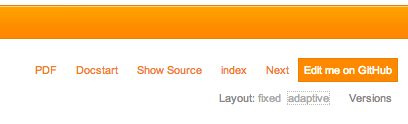

Advanced Markup¶
Overview
Title, copyright and version¶
A valid Sphinx project for an extension manual should contain a configuration file Settings.yml next to the main
document Index.rst. This file is your key to override default settings from the real Sphinx configuration file
conf.py which is not part of your project (because it contains settings related to the build environment on
http://docs.typo3.org). Instead, this YAML configuration file lets you define project options.
This extension takes care of loading options from Settings.yml as well, thus ensuring a smooth experience when
working locally on your extension manuals before their automatic deployment to http://docs.typo3.org.
A basic Settings.yml file should define a few basic project information:
1 2 3 4 5 | conf.py:
copyright: 2013
project: Sphinx Python Documentation Generator and Viewer
version: 1.2
release: 1.2.0
|
- project
- The documented project’s name.
- copyright
A copyright statement in the style
2013, Author Name.Tip
Within TYPO3 official documentation, we usually only show the year(s) of copyright, e.g.,
2013or2010-2013.- version
- The major project version, used as the replacement for
|version|. For example, for the TYPO3 documentation, this may be something like6.2. - release
The full project version, used as the replacement for
|release|. For example, for the TYPO3 documentation, this may be something like6.2.0rc1.If you don’t need the separation provided between
versionandrelease, just set them both to the same value.Tip
This is of course up to the extension’s author to decide on a version numbering scheme but best practices follow the same rules as for TYPO3 core and do not introduce breaking changes or new features in patch-release versions (when the last of the three digits changes).
As extension authors are very likely to forget to update the version prior to uploading their extension to TER, the rendering engine on http://docs.typo3.org automatically overrides the version and release parameters to the actual version as seen on TER.
PDF rendering¶
The PDF of your documentation is rendered using the LaTeX builder from Sphinx (see Rendering PDF from reStructuredText if needed)
and should be explicitly activated for your extension. To do so, open file Settings.yml (at the root of your
documentation folder) and make sure it contains following configuration options (lines 6 to 15):
1 2 3 4 5 6 7 8 9 10 11 12 13 14 15 | conf.py:
copyright: 2013
project: Sphinx Python Documentation Generator and Viewer
version: 1.1
release: 1.1.0
latex_documents:
- - Index
- sphinx.tex
- Sphinx Python Documentation Generator and Viewer
- Xavier Perseguers
- manual
latex_elements:
papersize: a4paper
pointsize: 10pt
preamble: \usepackage{typo3}
|
Lines 7 to 11 define options for value latex_documents which determines how to group the document tree into LaTeX
source files. This is a list of tuples: startdocname, targetname, title, author, documentclass, where
the items are:
- startdocname
Document name that is the “root” of the LaTeX files. All documents referenced by it in TOC trees will be included in the LaTeX file too.
Warning
Always use
Indexhere.- targetname
File name of the LaTeX file in the output directory.
Warning
Always use your extension key followed by
.texhere.- title
- LaTeX document title. This is inserted as LaTeX markup, so special characters like a backslash or ampersand must be represented by the proper LaTeX commands if they are to be inserted literally.
- author
- Author for the LaTeX document. The same LaTeX markup caveat as for title applies. Use
\andto separate multiple authors, as in:'John \and Sarah'. - documentclass
Normally, one of
manualorhowto(provided by Sphinx).Tip
To keep TYPO3 branding, you should always use
manualhere.
Lines 12 to 15 should be kept as-this. Line 15 is actually the “trigger” for PDF rendering.
When activated, your PDF gets automatically rendered on http://docs.typo3.org under
http://docs.typo3.org/typo3cms/extensions/extension-key/_pdf/. E.g.,
http://docs.typo3.org/typo3cms/extensions/sphinx/_pdf/.
Please read chapter customizing-rendering for further information on LaTeX configuration options.
Multilingual documentation¶
Multilingual exension manuals are supported by both this extension and http://docs.typo3.org. If you want to translate
your documentation, kickstart a new Sphinx project (incl. Settings.yml) within directory
Documentation/Localization.locale.
Tip
You may reuse assets such as Includes.txt or images from the main documentation under
directory Documentation but not the other way around, so you cannot reuse assets from a
translated manual within the main (English) manual.
Locales¶
Unless for the few prefixes which are already “locales”, http://docs.typo3.org expects a locale and not a language code
to be used; so make sure to extend the prefix accordingly. E.g., a French documentation (prefix fr) should be
extended either to fr_FR (French France) or fr_CA (French Canada). See our list of suggestions below.
Your translated exension manual will get rendered to http://docs.typo3.org/typo3cms/extensions/sphinx/fr-fr/ (HTML) and http://docs.typo3.org/typo3cms/extensions/sphinx/fr-fr/_pdf/ (PDF).
Caution
Files and URIs are generated lower-case and with dashes instead of underscores. This means that a documentation
with locale fr_FR will be accessible using fr-fr instead.
The list of supported languages for Sphinx is:
| Prefix | Name | Suggested Locale |
|---|---|---|
| bn | Bengali | bn_BD |
| ca | Catalan | ca_ES |
| cs | Czech | cs_CZ |
| da | Danish | da_DK |
| de | German | de_DE |
| es | Spanish | es_ES |
| et | Estonian | et_EE |
| eu | Basque | eu_ES |
| fa | Iranian | fa_IR |
| fi | Finnish | fi_FI |
| fr | French | fr_FR, fr_CA |
| hr | Croatian | hr_HR |
| hu | Hungarian | hu_HU |
| id | Indonesian | id_ID |
| it | Italian | it_IT |
| ja | Japanese | ja_JP |
| ko | Korean | ko_KR |
| lt | Lithuanian | lt_LT |
| lv | Latvian | lv_LV |
| mk | Macedonian | mk_MK |
| nb_NO | Norwegian Bokmal | nb_NO |
| ne | Nepali | ne_NP |
| nl | Dutch | nl_NL |
| pl | Polish | pl_PL |
| pt_BR | Brazilian Portuguese | pt_BR |
| ru | Russian | ru_RU |
| si | Sinhala | si_LK |
| sk | Slovak | sk_SK |
| sl | Slovenian | sl_SI |
| sv | Swedish | sv_SE |
| tr | Turkish | tr_TR |
| uk_UA | Ukrainian | uk_UA |
| zh_CN | Simplified Chinese | zh_CN |
| zh_TW | Traditional Chinese | zh_TW |
Best practices¶
When translating a documentation, you may be tempted to translate everything, including directory and file names. Although this sounds reasonable at first sight, we advise you not to do so.
In fact, best practices show that if you keep the original directory and file names, you let readers quickly switch back and forth from a chapter to its translation on http://docs.typo3.org because the language switch (currently hidden in the “version” dropdown) simply searches for the same relative URI in the translated documentation. If it finds the same document, it will go to the very same chapter (but translated!) otherwise it will go to the start page.
This is depicted by the following figure. The second navigation bar (French documentation) shows that directory and file
names have been preserved. It is thus possible to switch from the original, in English, to the French translation by
prefixing the URI segment fr-fr/. In the third navigation bar however, the directory and files names have been
translated as well, making it impossible to match chapters with their translated counterparts:
Edit manual on GitHub¶
In case your extension is hosted on GitHub, you may configure the manual so that it gets easily editable when published on http://docs.typo3.org:
To make this link visible, you should add the relative URI of your GitHub project repository and the branch you are
using (typically “master”) to the configuration file Documentation/Settings.yml:
1 2 3 4 5 6 7 8 | conf.py:
copyright: 2013-2014
project: Sphinx Python Documentation Generator and Viewer
version: 2.1
release: 2.1.0
html_theme_options:
github_repository: xperseguers/t3ext-sphinx
github_branch: master
|
where xperseguers/t3ext-sphinx is the relative URI in http://github.com/xperseguers/t3ext-sphinx.
Note
Every official TYPO3 manual, guide and reference is using this option, making it a breeze to contribute if you spot a typo or wish something got rephrased or better explained.
Other Semantic Markup¶
The following roles don’t do anything special except formatting the text in a different style:
-
:abbr:¶ An abbreviation. If the role content contains a parenthesized explanation, it will be treated specially: it will be shown in a tool-tip in HTML, and output only once in LaTeX.
Example:
:abbr:`LIFO (last-in, first-out)`: LIFO.
-
:command:¶ The name of an OS-level command, such as
rm.
-
:file:¶ The name of a file or directory. Within the contents, you can use curly braces to indicate a “variable” part, for example:
... is installed in :file:`/usr/lib/python2.{x}/site-packages` ...In the built documentation, the
xwill be displayed differently to indicate that it is to be replaced by the Python minor version.
-
:guilabel:¶ Labels presented as part of an interactive user interface should be marked using
guilabel. Any label used in the interface should be marked with this role, including button labels, window titles, field names, menu and menu selection names, and even values in selection lists.An accelerator key for the GUI label can be included using an ampersand; this will be stripped and displayed underlined in the output (example:
:guilabel:`&Cancel`). To include a literal ampersand, double it.
-
:kbd:¶ Mark a sequence of keystrokes. What form the key sequence takes may depend on platform- or application-specific conventions. When there are no relevant conventions, the names of modifier keys should be spelled out, to improve accessibility for new users and non-native speakers. For example, an xemacs key sequence may be marked like
:kbd:`C-x C-f`, but without reference to a specific application or platform, the same sequence should be marked as:kbd:`Control-x Control-f`.
Menu selections should be marked using the
menuselectionrole. This is used to mark a complete sequence of menu selections, including selecting submenus and choosing a specific operation, or any subsequence of such a sequence. The names of individual selections should be separated by-->.For example, to mark the selection “Start > Programs”, use this markup:
:menuselection:`Start --> Programs`
When including a selection that includes some trailing indicator, such as the ellipsis some operating systems use to indicate that the command opens a dialog, the indicator should be omitted from the selection name.
menuselectionalso supports ampersand accelerators just likeguilabel.
-
:program:¶ The name of an executable program. This may differ from the file name for the executable for some platforms. In particular, the
.exe(or other) extension should be omitted for Windows programs.
The following roles generate external links:
-
:rfc:¶ A reference to an Internet Request for Comments. This generates appropriate index entries. The text “RFC number” is generated; in the HTML output, this text is a hyperlink to an online copy of the specified RFC. You can link to a specific section by saying
:rfc:`number#anchor`.